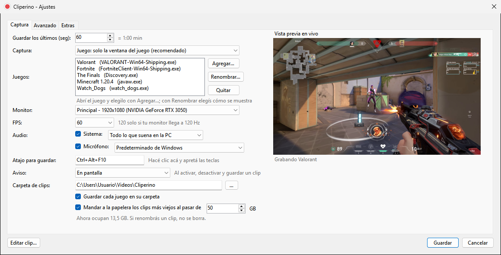

Guardalo
Cliperino graba en segundo plano sin que lo notes. Cuando pasa algo bueno, apretás Ctrl + Alt + F10 y los últimos segundos quedan como un .mp4 en tu carpeta de clips.
- Dota 2
- PUBG
Cualquier juego
Si se ve en tu pantalla, Cliperino lo graba. Competitivos, con amigos o de un jugador.
Recortalo
Hacé clic en el aviso y se abre el editor: marcás el inicio y el fin, sacás tu voz o todo el audio, y si lo vas a mandar por Discord, elegís el tamaño.
A tu gusto
Elegí si se graba solo la ventana del juego o la pantalla entera, con qué audio y con qué atajo. La vista previa en vivo te muestra cómo va a quedar antes de guardar nada.

Y además
Cualquier GPU, o incluso sin una
Usa el codificador de tu placa: NVIDIA, AMD o Intel, dedicada o integrada. Si no hay, usa el procesador.
Aviso en pantalla
Un cartel chico en la esquina te avisa cuando empieza o deja de grabar y cuando se guarda un clip, sin sacarte del juego.
Ordenado por juego
Cada clip va a una carpeta con el nombre de su juego, como Cliperino\VALORANT.
No se come tu disco
Si querés, le ponés un límite: al pasarlo, los clips más viejos van a la papelera. Los que renombraste no se tocan.
Liviano
Vive en la bandeja del sistema y casi no se nota mientras jugás.
Todo queda en tu PC
Tus clips y ajustes no salen de tu compu. Más en la política de privacidad.
Cómo se usa
- Descargá e instalá Cliperino. La primera vez te ofrece bajar ffmpeg (unos 100 MB), que es lo que usa para grabar.
- Abrí tu juego. Cliperino queda en la bandeja del sistema, al lado del reloj, grabando.
- Cuando pase algo que valga la pena, apretá Ctrl + Alt + F10. El clip queda en
Videos\Cliperino. - Hacé clic en el aviso de "Clip guardado" para recortarlo o dejarlo listo para Discord. El atajo y la duración se cambian desde los Ajustes.
Preguntas frecuentes
¿Es gratis? ¿Tiene publicidad o marca de agua?
Es gratis. No tiene publicidad, no pide cuenta y los clips no llevan ninguna marca de agua.
Windows dice que "protegió el equipo". ¿Es seguro?
Aparece porque Cliperino es un proyecto chico y no está firmado digitalmente. Tocá "Más información" y después "Ejecutar de todas formas". El código está completo en GitHub para quien quiera revisarlo.
¿Mis clips se suben a algún lado?
No. Cliperino no tiene cuentas ni servidores: los clips quedan en tu carpeta y los compartís solo si querés. Los detalles están en la política de privacidad.
¿Sirve como alternativa a ShadowPlay o AMD ReLive?
Sí. Hace lo mismo que su repetición instantánea, pero no depende de la marca de tu placa: funciona con NVIDIA, AMD o Intel, e incluso sin placa de video.
¿Funciona con juegos con anticheat, como VALORANT?
Sí. Cliperino no se mete en el juego: graba la ventana o la pantalla con las herramientas de captura de Windows, así que no choca con el anticheat.
¿Cuánto dura y cuánto pesa un clip?
Elegís cuánto guarda, de 5 segundos a 20 minutos (de fábrica, 1 minuto). Un minuto en calidad equilibrada, a 1080p y 60 FPS, pesa unos 150 MB. Si querés que ocupe menos, bajá la calidad o ponele un límite de espacio a la carpeta.
¿Cuál descargo, el instalador o la portable?
El instalador, si no sabés cuál elegir: lo deja en su lugar, crea el acceso en el menú Inicio y se desinstala desde la configuración de Windows. La portable es un solo .exe que podés llevar donde quieras.
¿Afecta el rendimiento del juego?
Muy poco: la grabación la hace la placa de video y el buffer se guarda en el disco en pedazos de 2 segundos.
¿Funciona en Mac, Linux o Windows 7?
No, por ahora solo funciona en Windows 10 y 11 de 64 bits.
Encontré un error o tengo una idea
Contalo en los issues de GitHub. También se puede abrir desde Ajustes → Extras.
¿Tu próximo clip?
Es gratis, sin cuenta y sin publicidad.
Descargar para Windows